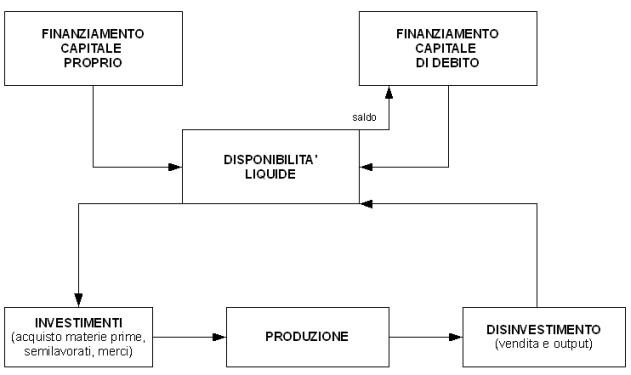
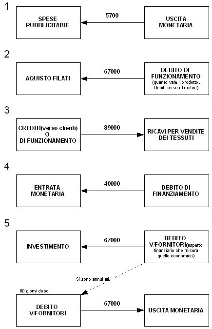
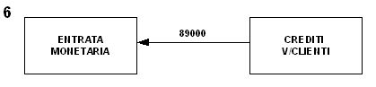
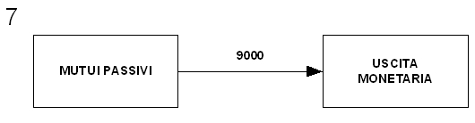
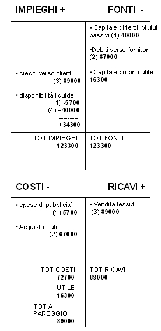
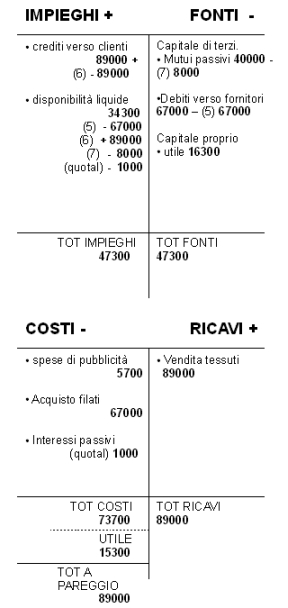
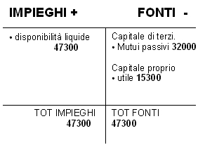

Torna alla pagina di Economia ed Organizzazione Aziendale
:: Economia ed Organizzazione Aziendale ::
Lezione 10/03/2008
PUNTI GENERALI
- Operazioni di gestione
- Operazioni
- Funzioni
- funzione finanza → operazioni di finanziamento
- funzione produzione → operazioni di trasformazione tecnica
- funzione logistica e approvigionamento → operazioni di investimento
- funzione markenting → operazioni di disinvestimento
- Aree di gestione
- caratteristica
- finanziaria
- patrimoniale
- assicurativa
- tributaria
- Ogni operazione esterna presenta un Aspetto:
- tecnico(al contabile non interessa)
- finanziario: aspetto originario, si collega al flusso monetario
- economico: aspetto derivato, calcolato da quello finanziario
Valori Finanziari
- disponibilità liquide
- denaro in cassa
- c/c bancario intestato all'azienda
- c/c postale
- crediti(dilazionato il pagamento al cliente) e debiti di funzionamento(debiti v/fornitori)
- crediti e debiti di finanziamento(si riferiscono ad attività di supporto all'azienda caratteristica)
Valori Economici
- ricavi(disinvestimento)
- costi(investimento)
NESSI LOGICI TRA LE OPERAZIONI DI GESTIONE

ESERCIZIO SU BOX E PROSPETTI
Impresa tessile che compie operazioni:
- si pagano spese pubblicitarie 5700
- si comperano filati 67000, pagamento a 60 giorni
- si vendono i tessuti 89000, pagamento a 60 giorni
- si ottiene un mutuo di 40000, accreditati su c/c bancario. Il mutuo genera interessi passivi che si pagano al prezzo del 5% annuo. Gli interessi si pagano insieme alla prima rata del capitale di 8000, 6 mesi dopo.
- dopo 60 giorni si paga il debito di 67000
- dopo 60 giorni si incassa il credito di 89000
- 6 mesi dopo si paga la prima rata del mutuo: quota c/capitale(8000) + quota c/interessi
RICHIESTA:
A) costruire i box delle varie operazioni
B) presentare il prospetto fonti/impieghi costi/ricavi dopo le prime 4 operazioni
C) presentare il prospetto fonti/impieghi costi/ricavi al termine della settima operazione
SOLUZIONE:
A:


Prima rata del mutuo: quota capitale(8000) + quota interessi(1000).
Quota interessi
i=0.05 annuale
C=40000
t=6 mesi
I = C * i * t = 40000 * 0.05 * 180/360nota1 = 1000
nota1: ANNO COMMERCIALE=360 giorni

B:

C:

SITUAZIONE PATRIMONIALE finale

Torna alla pagina di Economia ed Organizzazione Aziendale